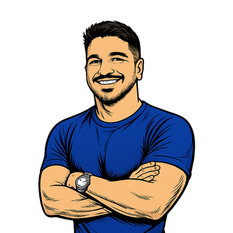

Identity & Security
IAM, Entra ID, Active Directory, Purview, Defender, Zero Trust, SAML, LDAP, and OAuth.
visitor@tkusal:~$ whoami
Transforming complex infrastructures into secure, predictable, and automated operations, connecting hybrid environments, IAM, governance, and business continuity.

visitor@tkusal:~$ cat ./about.md
More than just keeping the infrastructure running, my focus is on building secure, automated environments designed to support your business growth and continuity.
I have worked in IT infrastructure for more than 15 years, from server administration to leading teams and projects across hybrid and cloud environments. This experience helps me connect business needs with architecture, security, and high-availability decisions.
Today I modernize legacy environments with DevOps, Infrastructure as Code, and automation, reducing manual work and making changes more predictable and traceable. Identity and security are the foundation: I connect IAM, servers, networks, cloud, and governance in one integrated view.
IAM, Entra ID, Active Directory, Purview, Defender, Zero Trust, SAML, LDAP, and OAuth.
Windows Server, Linux, Hyper-V, VMware, Storage, Hybrid Environments, Azure, Microsoft 365, AWS, and Oracle Cloud.
PowerShell, Power Automate, Python, Shell Script, Terraform, Ansible, Docker, Kubernetes, Git, Pipelines, Standardization, and Continuous Improvement.
I believe knowledge grows stronger when shared. That's why I share my experiences, challenges, and lessons learned on RookieOps and my other channels. Contributing to the community is what connects my hands-on experience to my journey toward becoming a Microsoft MVP.
visitor@tkusal:~$ ls -la ./skills/
visitor@tkusal:~$ tail -n 4 ./rookieops.log
Content about infrastructure, identity, cloud, security, automation, and technology careers.
Articles are currently available only in Brazilian Portuguese.
Aug 21, 2026
Learn the current requirements, contribution paths, benefits, and onboarding process to become a Microsoft Student Ambassador in 2026.
Aug 20, 2026
Centralize the inspection of a hub and spoke network in Azure with Firewall Basic, Firewall Policy, and Terraform-managed UDRs.
Aug 13, 2026
Protect subnets in an Azure hub and spoke network with modular NSGs, explicit rules, and associations managed by Terraform.
Aug 09, 2026
Build a hub and spoke network in Azure with Terraform, non-overlapping IPAM, reusable modules, and ready-to-validate peerings.
Aug 05, 2026
Understand how VNet, subnet, NSG, and routes work together in Azure and build a secure lab with Azure CLI.
Aug 02, 2026
Learn GitHub Actions hands-on: build a secure CI/CD pipeline with tests, matrix, artifacts, and GitHub Pages deployment for the GH-200 certification.
 PowerShell
PowerShell Microsoft Entra ID
Microsoft Entra ID